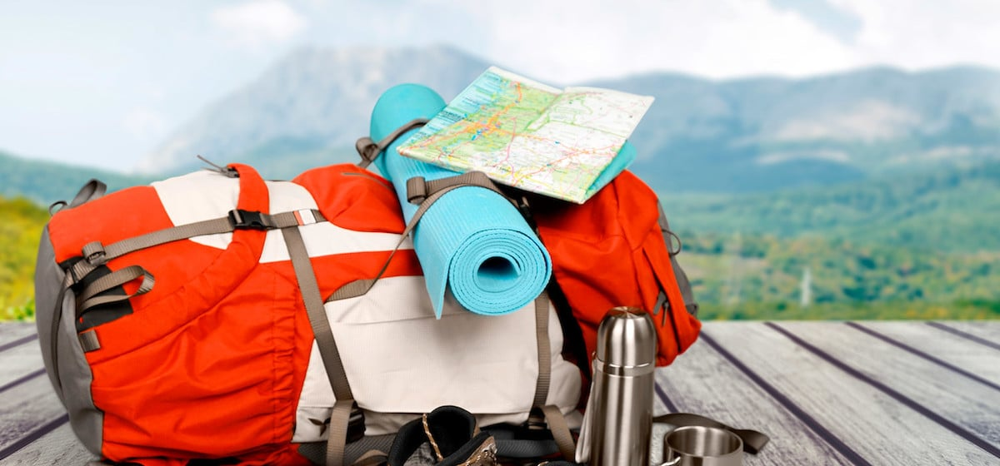

Travelling is a combination of medication and knowledge
Travel allows us to learn about and experience new places and cultures and can help us grow personally and professionally.
Exploring many different places, trying new things, and meeting new people can broaden our perspectives and deepen our understanding of the world. And all of that is the importance of travel.
